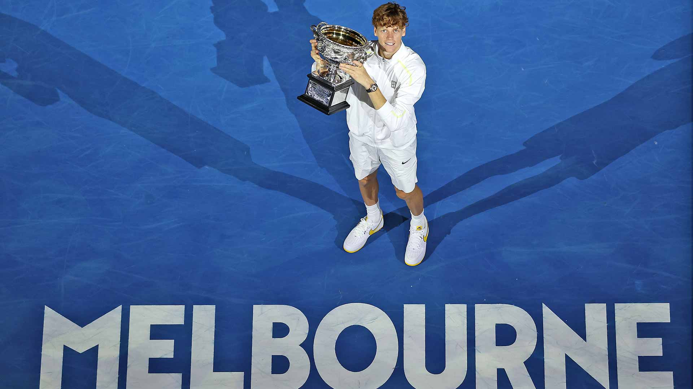
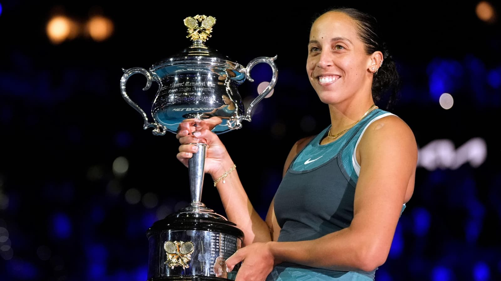
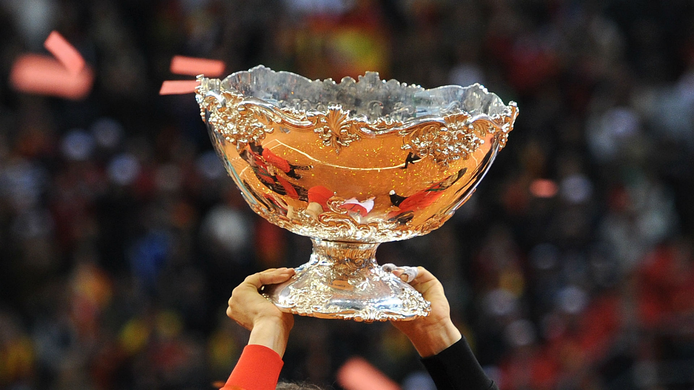
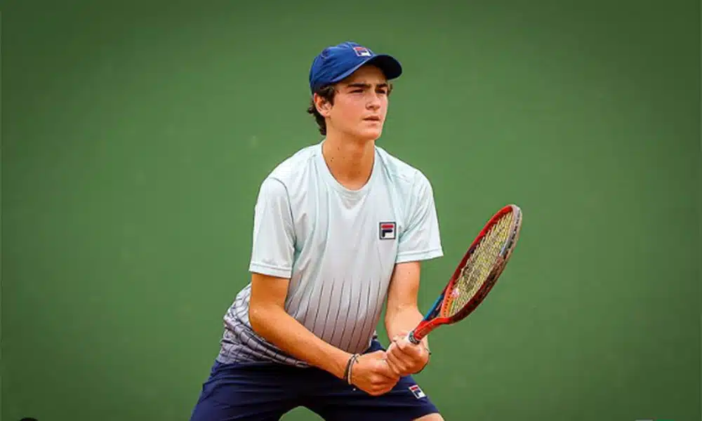
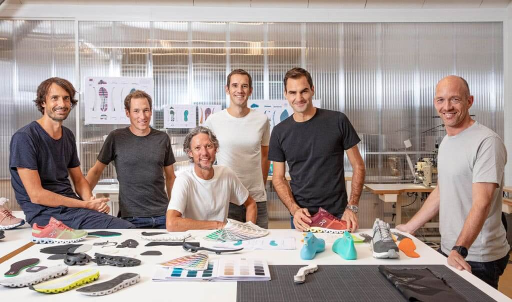

40-0
Scores
Players
Tournaments
Rankings
Latest News
Sinner-mania!

Keys stuns reigning champion Sabalenka

What happens after the Australian Open?

Young players to follow this year

What is Roger Federer doing in retirement?
